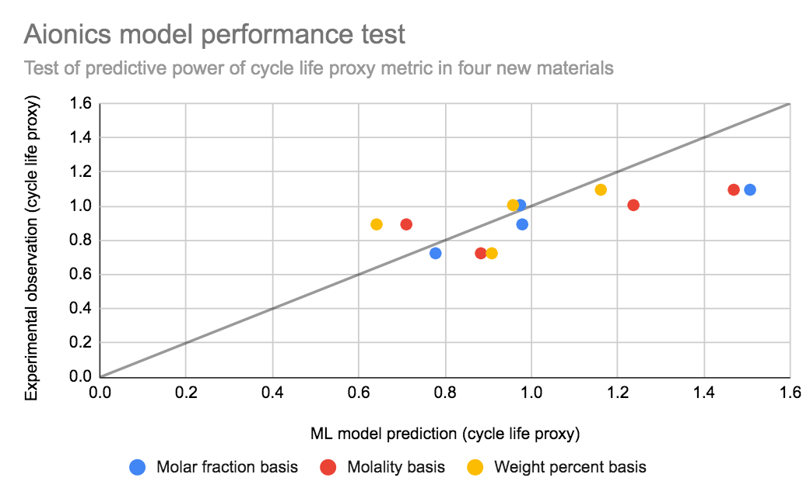

<section id="accelerated_rd">
    <div class="container">
        <h1>Research suggests that A.I. approaches offer significant acceleration</h1>
        <div class="content-box">
            <div class="screenshots">
                <div class="screenshot">
                    <div class="device laptop">
                        <div class="device-content">
                            <figure>
                                
                            </figure>
                        </div>
                    </div>
                </div>
                <div data-aos="fade-up" data-aos-offset="200" data-aos-delay="50" data-aos-duration="1000" data-aos-easing="ease-in-out" data-aos-mirror="true" data-aos-once="false" data-aos-anchor-placement="top-center"  class="screenshot">
                    <div class="device phone">
                        <div class="device-content">
                            <div class="news-content">
                                
                                
                                
                            </div>
                        </div>
                    </div>
                </div>
            </div>
        </div>
    </div>

</section>